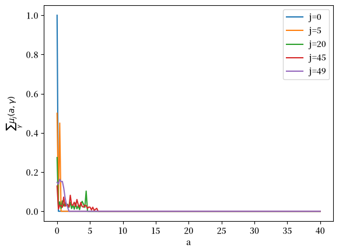
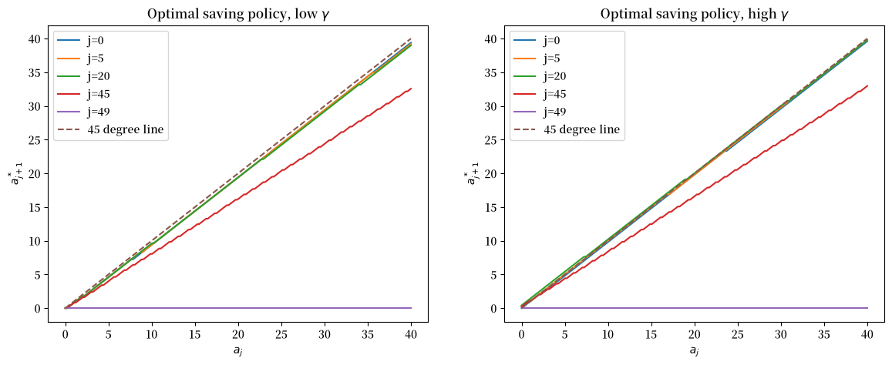
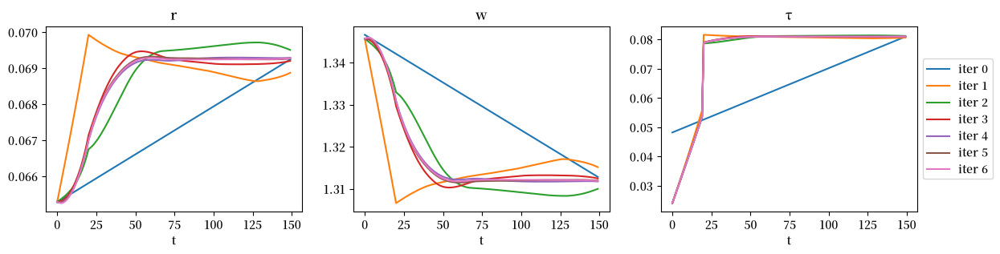
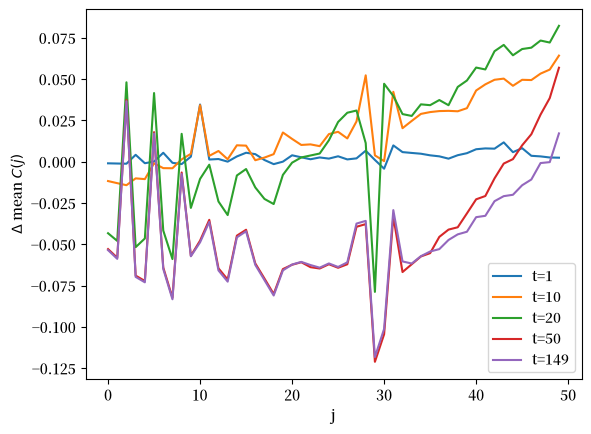
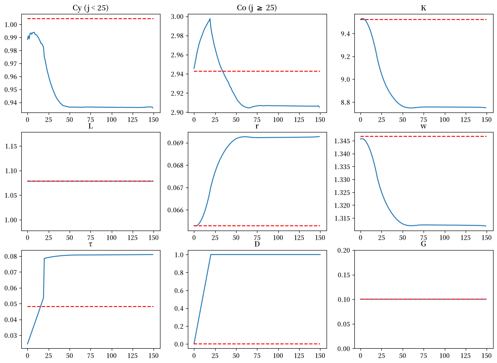
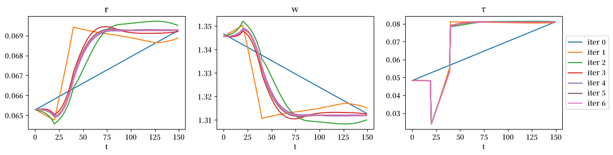
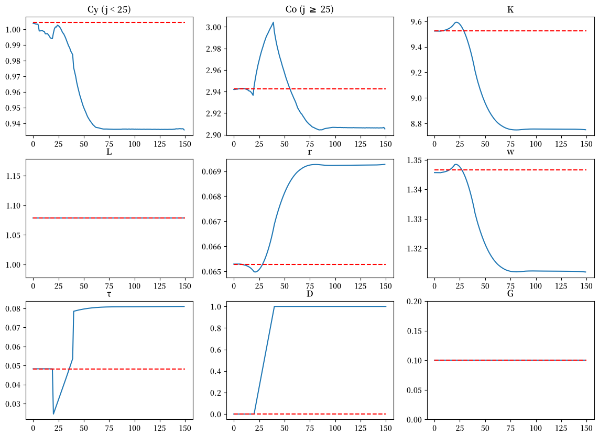
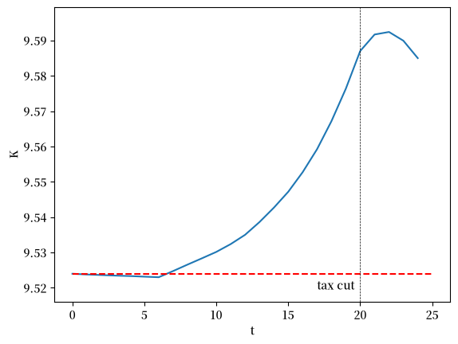
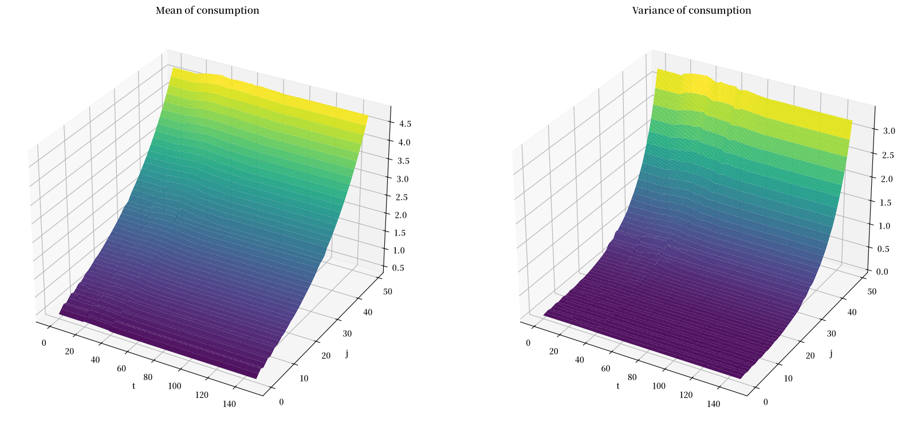

123. 长寿、异质性个体、世代交叠模型#
GPU
本讲座是在配有GPU的机器上构建的——不过没有GPU也可以运行。
Google Colab 提供带GPU的免费套餐，使用方法如下：
点击右上角的”播放”图标
选择 Colab
将运行时环境设置为包含GPU
除了Anaconda中已有的库之外，本讲座还需要以下库
!pip install jax
123.1. 概述#
本讲座描述了一个具有以下特征的世代交叠模型：
不完全市场的竞争均衡决定价格和数量
如 [Auerbach and Kotlikoff, 1987] 所述，个体存活多个时期
如 [Aiyagari, 1994] 所述，个体受到无法完全投保的特殊劳动生产率冲击
如 [Auerbach and Kotlikoff, 1987] 第2章和 Transitions in an Overlapping Generations Model 所述，政府财政政策工具包括税率、债务和转移支付
在其他均衡要素中，竞争均衡决定了异质性个体消费、劳动收入和储蓄的横截面密度序列
我们使用该模型研究：
财政政策如何影响不同世代
市场不完全性如何促进预防性储蓄
生命周期储蓄和缓冲储蓄动机如何相互作用
财政政策如何在世代间和世代内重新分配资源
作为本讲座的先决条件，我们推荐两个 quantecon 讲座：
以及可选阅读材料 艾亚加里模型
像往常一样，让我们先导入一些 Python 模块
from collections import namedtuple
import numpy as np
import matplotlib.pyplot as plt
import matplotlib as mpl
FONTPATH = "fonts/SourceHanSerifSC-SemiBold.otf"
mpl.font_manager.fontManager.addfont(FONTPATH)
plt.rcParams['font.family'] = ['Source Han Serif SC']
import jax.numpy as jnp
import jax.scipy as jsp
import jax
123.2. 经济环境#
我们首先介绍我们所处的经济环境。
123.2.1. 人口统计和时间#
我们在离散时间中工作，用 \(t = 0, 1, 2, ...\) 表示。
每个个体存活 \(J = 50\) 个时期，不存在死亡风险。
我们用 \(j = 0, 1, ..., 49\) 表示年龄。
每个世代的质量为 \(1/J\)，总人口为一，因此截面平均值等于各世代平均值的 \(\frac{1}{J}\sum_j\)。
在整个分析中，我们将每个世代的密度 \(\mu_{j,t}\) 归一化为积分等于一，因此人口权重 \(1/J\) 会明确出现在加总量中。
123.2.2. 个体状态变量#
在时间 \(t\) 时，年龄为 \(j\) 的个体 \(i\) 由两个状态变量表征：资产持有量 \(a_{i,j,t}\) 和特质劳动生产率 \(\gamma_{i,j,t}\)。
特质劳动生产率过程遵循一个两状态马尔可夫链，取值为 \(\gamma_l\) 和 \(\gamma_h\)，转移矩阵为 \(\Pi\)。
新生个体在这些生产率状态上的初始分布为 \(\pi = [0.5, 0.5]\)。
123.2.3. 劳动供给#
生产率为 \(\gamma_{i,j,t}\) 的个体提供 \(l(j)\gamma_{i,j,t}\) 单位的有效劳动。
\(l(j)\) 是一个确定性的年龄特定劳动效率单位曲线。
个体的有效劳动供给取决于生命周期效率曲线和特质随机过程。
123.2.4. 初始条件#
新生个体的初始资产为零 \(a_{i,0,t} = 0\)。
初始特质生产率从分布 \(\pi\) 中抽取。
个体不留遗产，终期价值函数为 \(V_J(a) = 0\)。
123.3. 生产#
代表性企业采用规模报酬不变的柯布-道格拉斯生产函数：
其中：
\(K_t\) 是总资本
\(L_t\) 是总劳动效率单位
\(Z_t\) 是全要素生产率
\(\alpha\) 是资本份额
资本不发生折旧，因此下文中的租赁率 \(r_t\) 是净回报率。
123.4. 政府#
政府实行包括债务、税收、转移支付和政府支出的财政政策。
政府发行一期债务 \(D_t\) 来为其运营提供资金，并通过对劳动和资本收入征收统一税率 \(\tau_t\) 来收取收入。
政府还实施针对不同年龄组的定额税收或转移支付 \(\delta_{j,t}\)，可以在不同年龄组之间重新分配资源。
此外，政府还进行公共物品和服务的政府采购 \(G_t\)。
政府在时间 \(t\) 的预算约束是
其中总税收 \(T_t\) 满足
这里所有量都是人均量，这也是为什么针对不同年龄组的定额税收会带有人口权重 \(1/J\)。
123.5. 要素市场活动#
在每个时间 \(t \geq 0\)，个体供应劳动和资本。
123.5.1. 特定年龄的劳动供给#
年龄为 \(j \in \{0,1,...,J-1\}\) 的个体根据以下因素供应劳动：
其确定性的年龄效率曲线 \(l(j)\)
其当前特质生产率冲击 \(\gamma_{i,j,t}\)
每个个体供应 \(l(j)\gamma_{i,j,t}\) 个有效劳动单位，并按每个有效单位获得竞争性工资 \(w_t\)，同时需缴纳统一税率 \(\tau_t\) 的劳动收入税。
123.5.2. 资产市场参与#
总结资产市场活动，所有年龄为 \(j \in \{0,1,...,J-1\}\) 的个体都可以：
持有资产 \(a_{i,j,t}\)（受借贷约束）
在储蓄上获得无风险的单期回报率 \(r_t\)
按统一税率 \(\tau_t\) 缴纳资本所得税
获得或支付与年龄相关的转移支付 \(\delta_{j,t}\)
123.5.3. 主要特征#
生命周期模式影响不同年龄的经济行为：
劳动生产率根据年龄曲线 \(l(j)\) 系统性变化，而资产持有量则遵循生命早期积累、生命晚期消耗的生命周期模式。
该模型中不存在退休，因为 \(l(j) > 0\) 在任何年龄都成立，所以个体在生命晚期减少资产持有是因为临近生命终点，而不是因为停止工作。
特定年龄的财政转移支付 \(\delta_{j,t}\) 在代际间重新分配资源。
同期群组内部异质性导致同龄人之间的差异：
同龄人因特异性生产率冲击的不同历史、当前生产率 \(\gamma_{i,j,t}\)，以及由此产生的劳动收入和金融财富的差异，而在资产持有量 \(a_{i,j,t}\) 上存在差异。
跨期群组互动通过市场聚合决定均衡结果：
所有群组共同参与要素市场，所有群组的资产供给决定总资本，所有群组的有效劳动供给决定总劳动。
均衡价格反映生命周期和再分配的双重力量。
123.6. 代表性企业的问题#
代表性企业选择资本和有效劳动以最大化利润
一阶必要条件意味着
和
123.7. 家庭问题#
家庭的价值函数满足贝尔曼方程
其中最大化受约束于
以及终端条件 \(V_{J,t}(a, \gamma) = 0\)
约束 \(a' \geq 0\) 排除了借贷的可能性，因此主体只能通过积累资产来进行自我保险。
这正是此处市场不完全的含义所在。
123.8. 人口动态#
资产持有量和特质劳动生产率的联合概率密度函数 \(\mu_{j,t}(a,\gamma)\) 按如下方式演化：
对于新生人口 \((j=0)\)：
每个群组的密度积分为一，因此该密度在下文的加总中带有群组权重 \(1/J\)。
对于其他群组：
\[ \mu_{j+1,t+1}(a',\gamma') = \int {\bf 1}_{\sigma_{j,t}(a,\gamma)=a'}\Pi(\gamma,\gamma')\mu_{j,t}(a,\gamma)d(a,\gamma) \]
其中 \(\sigma_{j,t}(a,\gamma)\) 是最优储蓄策略函数。
123.9. 均衡#
均衡包括：
价值函数\(V_{j,t}\)
策略函数\(\sigma_{j,t}\)
联合概率分布\(\mu_{j,t}\)
价格\(r_t, w_t\)
政府政策\(\tau_t, D_t, \delta_{j,t}, G_t\)
满足以下条件：
在给定价格和政府政策的情况下，价值函数和策略函数解决家庭问题
在给定价格的情况下，代表性企业实现利润最大化
政府预算约束得到满足
市场出清：
资产市场：\(K_t = \frac{1}{J}\sum_j \int a \mu_{j,t}(a,\gamma)d(a,\gamma) - D_t\)
劳动力市场：\(L_t = \frac{1}{J}\sum_j \int l(j)\gamma \mu_{j,t}(a,\gamma)d(a,\gamma)\)
相对于 Transitions in an Overlapping Generations Model 中提出的模型，本模型增加了：
由生产率冲击导致的代内异质性
预防性储蓄动机
更多的再分配效应
更复杂的转型动态
123.10. 实现#
使用 Discrete State Dynamic Programming 中的工具，我们通过将值函数迭代与均衡价格确定相结合来求解我们的模型。
一个合理的方法是在寻找市场出清价格的外循环中嵌套一个离散动态规划求解器。
对于候选序列的利率\(r_t\)和工资\(w_t\)，我们可以使用值函数迭代或策略迭代来求解个体家庭的动态规划问题，从而获得最优策略函数。
然后我们推导出每个年龄群体的资产持有量和特质劳动效率单位的相关平稳联合概率分布。
这将给我们提供总资本供给（来自家庭储蓄）和劳动力供给（来自年龄效率曲线和生产率冲击）。
然后我们可以将这些与企业的资本和劳动力需求进行比较，计算要素市场供给和需求之间的偏差，然后更新价格猜测，直到找到市场出清价格。
为了构建转型动态，我们可以通过使用_向后归纳法_计算价值函数和政策函数，以及使用_向前迭代法_计算主体在各状态之间的分布，来计算时变价格序列：
外循环（市场出清）
猜测初始价格（\(r_t, w_t\)）
迭代直到资产和劳动力市场出清
使用企业的一阶必要条件来更新价格
内循环（个体动态规划）
对每个年龄群组：
离散化资产和生产率状态空间
使用价值函数迭代或政策迭代
求解最优储蓄政策
计算稳态分布
聚合
在每个群组内对个体状态求和
跨群组求和得到
总资本供给，和
总有效劳动力供给
考虑人口权重 \(1/J\)
转型动态
向后归纳：
从最终稳态开始
求解价值函数序列
向前迭代：
从初始分布开始
追踪群组分布随时间变化
每期市场出清：
求解价格序列
更新直到所有市场在所有期都出清
我们通过定义描述偏好、企业和政府预算约束的辅助函数来开始编码。
ϕ, k_bar = 0., 0.
@jax.jit
def V_bar(a):
"根据资产持有量确定的终端价值函数。"
return - ϕ * (a - k_bar) ** 2
ν = 0.5
@jax.jit
def u(c):
"消费带来的效用。"
return c ** (1 - ν) / (1 - ν)
l1, l2, l3 = 0.5, 0.05, -0.0008
@jax.jit
def l(j):
"年龄相关的工资曲线。"
return l1 + l2 * j + l3 * j ** 2
让我们定义一个包含控制生产技术参数的 Firm 命名元组。
Firm = namedtuple("Firm", ("α", "Z"))
def create_firm(α=0.3, Z=1):
return Firm(α=α, Z=Z)
firm = create_firm()
以下辅助函数将从代表性企业的一阶必要条件中得出的要素投入（\(K, L\)）和要素价格（\(w, r\)）联系起来。
@jax.jit
def KL_to_r(K, L, firm):
α, Z = firm
return Z * α * (K / L) ** (α - 1)
@jax.jit
def KL_to_w(K, L, firm):
α, Z = firm
return Z * (1 - α) * (K / L) ** α
我们使用函数 find_τ 来寻找能够平衡政府预算约束的统一税率，这个税率取决于其他政策变量，包括债务水平、政府支出和转移支付。
@jax.jit
def find_τ(policy, price, aggs):
D, D_next, G, δ = policy
r, w = price
K, L = aggs
# 每个群组的人口质量为1/J，因此人均转移支付为δ.sum()/J
J = δ.shape[-1]
num = r * D + G - D_next + D - δ.sum(axis=-1) / J
denom = w * L + r * (D + K)
return num / denom
我们使用命名元组 Household 来存储表征家庭问题的参数。
Household = namedtuple("Household", ("j_grid", "a_grid", "γ_grid",
"Π", "β", "init_μ", "VJ"))
def create_household(
a_min=0., a_max=40, a_size=200,
Π=[[0.9, 0.1], [0.1, 0.9]],
γ_grid=[0.5, 1.5],
β=0.96, J=50
):
j_grid = jnp.arange(J)
a_grid = jnp.linspace(a_min, a_max, a_size)
γ_grid, Π = map(jnp.array, (γ_grid, Π))
γ_size = len(γ_grid)
# 新生人口的分布
init_μ = jnp.zeros((a_size * γ_size))
# 新生者的初始资产为零
# 且γ的概率相等
init_μ = init_μ.at[:γ_size].set(1 / γ_size)
# 终端值V_bar(a)
VJ = jnp.empty(a_size * γ_size)
for a_i in range(a_size):
a = a_grid[a_i]
VJ = VJ.at[a_i*γ_size:(a_i+1)*γ_size].set(V_bar(a))
return Household(j_grid=j_grid, a_grid=a_grid, γ_grid=γ_grid,
Π=Π, β=β, init_μ=init_μ, VJ=VJ)
hh = create_household()
我们应用离散状态动态规划工具。
初始步骤包括为我们的离散化贝尔曼方程准备奖励矩阵 \(R\) 和转移矩阵 \(Q\)。
@jax.jit
def populate_Q(household):
j_grid, a_grid, γ_grid, Π, β, init_μ, VJ = household
num_state = a_grid.size * γ_grid.size
num_action = a_grid.size
Q = jsp.linalg.block_diag(*[Π]*a_grid.size)
Q = Q.reshape((num_state, num_action, γ_grid.size))
Q = jnp.tile(Q, a_grid.size).T
return Q
@jax.jit
def populate_R(j, r, w, τ, δ, household):
j_grid, a_grid, γ_grid, Π, β, init_μ, VJ = household
num_state = a_grid.size * γ_grid.size
num_action = a_grid.size
a = jnp.reshape(a_grid, (a_grid.size, 1, 1))
γ = jnp.reshape(γ_grid, (1, γ_grid.size, 1))
ap = jnp.reshape(a_grid, (1, 1, a_grid.size))
c = (1 + r*(1-τ)) * a + (1-τ) * w * l(j) * γ - δ[j] - ap
return jnp.reshape(jnp.where(c > 0, u(c), -jnp.inf),
(num_state, num_action))
123.11. 计算稳态#
我们首先计算一个稳态。
给定价格和税收的猜测值，我们可以使用反向归纳法来求解所有年龄段的价值函数以及最优消费和储蓄策略。
函数backwards_opt通过反向应用离散化的贝尔曼算子来求解最优值。
我们使用jax.lax.scan来高效地进行顺序和递归计算。
@jax.jit
def backwards_opt(prices, taxes, household, Q):
r, w = prices
τ, δ = taxes
j_grid, a_grid, γ_grid, Π, β, init_μ, VJ = household
J = j_grid.size
num_state = a_grid.size * γ_grid.size
num_action = a_grid.size
def bellman_operator_j(V_next, j):
"在给定Vj+1的情况下，求解年龄j时的家庭优化问题"
Rj = populate_R(j, r, w, τ, δ, household)
vals = Rj + β * Q.dot(V_next)
σ_j = jnp.argmax(vals, axis=1)
V_j = vals[jnp.arange(num_state), σ_j]
return V_j, (V_j, σ_j)
js = jnp.arange(J-1, -1, -1)
init_V = VJ
# 从年龄J迭代到1
_, outputs = jax.lax.scan(bellman_operator_j, init_V, js)
V, σ = outputs
V = V[::-1]
σ = σ[::-1]
return V, σ
r, w = 0.05, 1
τ, δ = 0.15, np.zeros(hh.j_grid.size)
Q = populate_Q(hh)
V, σ = backwards_opt([r, w], [τ, δ], hh, Q)
让我们用 block_until_ready() 来计时，以确保所有 JAX 运算都已完成
%time backwards_opt([r, w], [τ, δ], hh, Q)[0].block_until_ready();
CPU times: user 947 ms, sys: 4.83 ms, total: 952 ms
Wall time: 241 ms
从每个群组的最优消费和储蓄选择出发，我们可以计算出稳态下资产水平和特质生产率水平的联合概率分布。
@jax.jit
def popu_dist(σ, household, Q):
j_grid, a_grid, γ_grid, Π, β, init_μ, VJ = household
J = household.j_grid.size
num_state = household.a_grid.size * household.γ_grid.size
def update_popu_j(μ_j, j):
"更新从年龄j到j+1的人口分布"
Qσ = Q[jnp.arange(num_state), σ[j]]
μ_next = μ_j @ Qσ
return μ_next, μ_next
js = jnp.arange(J-1)
# 从年龄1迭代到J
_, μ = jax.lax.scan(update_popu_j, init_μ, js)
μ = jnp.concatenate([init_μ[jnp.newaxis], μ], axis=0)
return μ
μ = popu_dist(σ, hh, Q)
让我们计时计算过程
%time popu_dist(σ, hh, Q)[0].block_until_ready();
CPU times: user 38.5 ms, sys: 76 μs, total: 38.5 ms
Wall time: 35.5 ms
下面我们绘制每个年龄组的储蓄边缘分布。
for j in [0, 5, 20, 45, 49]:
plt.plot(hh.a_grid, jnp.sum(μ[j].reshape((hh.a_grid.size, hh.γ_grid.size)), axis=1), label=f'j={j}')
plt.legend()
plt.xlabel('a')
plt.ylabel(r'$\sum_\gamma \mu_j(a, \gamma)$')
plt.show()
findfont: Failed to find font weight normal, now using 600.
findfont: Failed to find font weight normal, now using 600.

图 123.1 按年龄划分的资产边缘分布#
如果网格过窄，会使概率质量堆积在最高资产水平处，从而扭曲这些分布。
让我们验证这里没有发生这种情况。
top_mass = μ.reshape((hh.j_grid.size, hh.a_grid.size,
hh.γ_grid.size))[:, -1, :].sum() / hh.j_grid.size
print(f"population share at a_max = {hh.a_grid[-1]:.0f}: {top_mass:.3%}")
population share at a_max = 40: 0.000%
练习 123.1 探讨了当上限约束起作用时会发生什么情况。
这些边缘分布确认新进入经济体的个体没有任何资产持有。
蓝色的 \(j=0\) 分布仅在 \(a=0\) 处有质量。
随着个体年龄增长，他们最初会逐渐积累资产。
橙色的 \(j=5\) 分布在正但较低的资产水平上有正质量
绿色的 \(j=20\) 分布在更广范围的资产水平上有正质量
红色的 \(j=45\) 分布范围更宽
在较晚年龄，他们会逐渐减少其资产持有。
紫色的 \(j=49\) 分布说明了这一点
在生命末期，他们将耗尽所有资产。
让我们现在看看产生前述不同年龄资产边缘分布的年龄特定最优储蓄政策。
我们将用以下Python代码绘制一些储蓄函数。
σ_reshaped = σ.reshape(hh.j_grid.size, hh.a_grid.size, hh.γ_grid.size)
j_labels = [f'j={j}' for j in [0, 5, 20, 45, 49]]
fig, axs = plt.subplots(1, 2, figsize=(14, 5))
axs[0].plot(hh.a_grid, hh.a_grid[σ_reshaped[[0, 5, 20, 45, 49], :, 0].T])
axs[0].plot(hh.a_grid, hh.a_grid, '--')
axs[0].set_xlabel("$a_{j}$")
axs[0].set_ylabel("$a^*_{j+1}$")
axs[0].legend(j_labels+['45 degree line'])
axs[0].set_title(r"Optimal saving policy, low $\gamma$")
axs[1].plot(hh.a_grid, hh.a_grid[σ_reshaped[[0, 5, 20, 45, 49], :, 1].T])
axs[1].plot(hh.a_grid, hh.a_grid, '--')
axs[1].set_xlabel("$a_{j}$")
axs[1].set_ylabel("$a^*_{j+1}$")
axs[1].legend(j_labels+['45 degree line'])
axs[1].set_title(r"Optimal saving policy, high $\gamma$")
plt.show()
findfont: Failed to find font weight normal, now using 600.
findfont: Failed to find font weight normal, now using 600.

从隐含的平稳人口分布中，我们可以计算总劳动供给 \(L\) 和私人储蓄 \(A\)。
@jax.jit
def compute_aggregates(μ, household):
j_grid, a_grid, γ_grid, Π, β, init_μ, VJ = household
J, a_size, γ_size = j_grid.size, a_grid.size, γ_grid.size
μ = μ.reshape((J, household.a_grid.size, household.γ_grid.size))
# 计算私人储蓄
a = a_grid.reshape((1, a_size, 1))
A = (a * μ).sum() / J
γ = γ_grid.reshape((1, 1, γ_size))
lj = l(j_grid).reshape((J, 1, 1))
L = (lj * γ * μ).sum() / J
return A, L
A, L = compute_aggregates(μ, hh)
A, L
(Array(1.8476002, dtype=float32), Array(1.0781994, dtype=float32))
该经济体中的资本存量等于\(A-D\)。
D = 0
K = A - D
企业的最优条件意味着利率 \(r\) 和工资率 \(w\)。
KL_to_r(K, L, firm), KL_to_w(K, L, firm)
(Array(0.20577142, dtype=float32), Array(0.8227554, dtype=float32))
隐含价格\((r,w)\)与我们的猜测不同，所以我们必须更新猜测并迭代直到找到一个不动点。
这是我们的外层循环。
@jax.jit
def find_ss(household, firm, pol_target, Q, tol=1e-6, max_iter=200):
j_grid, a_grid, γ_grid, Π, β, init_μ, VJ = household
J = j_grid.size
num_state = a_grid.size * γ_grid.size
D, G, δ = pol_target
# 价格的初始猜测
r, w = 0.05, 1.
# τ的初始猜测
τ = 0.15
def cond_fn(state):
"收敛标准。"
V, σ, μ, K, L, r, w, τ, D, G, δ, r_old, w_old, i = state
error = (r - r_old) ** 2 + (w - w_old) ** 2
return (error > tol) & (i < max_iter)
def body_fn(state):
"迭代的主体部分。"
V, σ, μ, K, L, r, w, τ, D, G, δ, r_old, w_old, i = state
r_old, w_old = r, w
# 家庭最优决策和价值
V, σ = backwards_opt([r, w], [τ, δ], household, Q)
# 计算稳态分布
μ = popu_dist(σ, household, Q)
# 计算总量
A, L = compute_aggregates(μ, household)
K = A - D
# 更新价格
r, w = KL_to_r(K, L, firm), KL_to_w(K, L, firm)
# 寻找τ
D_next = D
τ = find_τ([D, D_next, G, δ],
[r, w],
[K, L])
r = (r + r_old) / 2
w = (w + w_old) / 2
return V, σ, μ, K, L, r, w, τ, D, G, δ, r_old, w_old, i + 1
# 初始状态
V = jnp.empty((J, num_state), dtype=float)
σ = jnp.empty((J, num_state), dtype=int)
μ = jnp.empty((J, num_state), dtype=float)
K, L = 1., 1.
initial_state = (V, σ, μ, K, L, r, w, τ, D, G, δ, r-1, w-1, 0)
V, σ, μ, K, L, r, w, τ, D, G, δ, _, _, i = jax.lax.while_loop(
cond_fn, body_fn, initial_state)
# 如果循环在收敛前停止，i 将等于 max_iter
return V, σ, μ, K, L, r, w, τ, D, G, δ, i
ss1 = find_ss(hh, firm, [0, 0.1, np.zeros(hh.j_grid.size)], Q)
print(f"iterations used: {ss1[-1]}")
iterations used: 10
让我们计时计算过程
%time find_ss(hh, firm, [0, 0.1, np.zeros(hh.j_grid.size)], Q)[0].block_until_ready();
CPU times: user 5.14 s, sys: 12.9 ms, total: 5.15 s
Wall time: 1.34 s
hh_out_ss1 = ss1[:3]
quant_ss1 = ss1[3:5]
price_ss1 = ss1[5:7]
policy_ss1 = ss1[7:11]
# V, σ, μ
V_ss1, σ_ss1, μ_ss1 = hh_out_ss1
# K, L
K_ss1, L_ss1 = quant_ss1
K_ss1, L_ss1
(Array(9.523983, dtype=float32), Array(1.0781993, dtype=float32))
# 利率，工资
r_ss1, w_ss1 = price_ss1
r_ss1, w_ss1
(Array(0.06527606, dtype=float32), Array(1.3466166, dtype=float32))
# τ, D, G, δ
τ_ss1, D_ss1, G_ss1, δ_ss1 = policy_ss1
τ_ss1, D_ss1, G_ss1, δ_ss1
(Array(0.04824642, dtype=float32),
Array(0, dtype=int32, weak_type=True),
Array(0.1, dtype=float32, weak_type=True),
Array([0., 0., 0., 0., 0., 0., 0., 0., 0., 0., 0., 0., 0., 0., 0., 0., 0.,
0., 0., 0., 0., 0., 0., 0., 0., 0., 0., 0., 0., 0., 0., 0., 0., 0.,
0., 0., 0., 0., 0., 0., 0., 0., 0., 0., 0., 0., 0., 0., 0., 0.], dtype=float32))
123.12. 转换动态#
我们使用 path_iteration 函数计算转换动态。
在外循环中，我们对价格和税收的猜测值进行迭代。
在内循环中，我们计算每个年龄组 \(j\) 在每个时间 \(t\) 的最优消费和储蓄选择，然后找出资产和生产力联合分布的隐含演变。
然后，我们根据经济中的总劳动供给和资本存量更新价格和税收的猜测值。
我们使用 solve_backwards 来求解给定价格和税收序列下的最优储蓄选择，并使用 simulate_forward 来计算联合分布的演变。
我们需要两个稳态作为输入：初始稳态为 simulate_forward 提供初始条件，最终稳态为 solve_backwards 提供延续值。
@jax.jit
def bellman_operator(prices, taxes, V_next, household, Q):
r, w = prices
τ, δ = taxes
j_grid, a_grid, γ_grid, Π, β, init_μ, VJ = household
J = j_grid.size
num_state = a_grid.size * γ_grid.size
num_action = a_grid.size
def bellman_operator_j(j):
Rj = populate_R(j, r, w, τ, δ, household)
vals = Rj + β * Q.dot(V_next[j+1])
σ_j = jnp.argmax(vals, axis=1)
V_j = vals[jnp.arange(num_state), σ_j]
return V_j, σ_j
V, σ = jax.vmap(bellman_operator_j, (0,))(jnp.arange(J-1))
# 最后的生命阶段
j = J-1
Rj = populate_R(j, r, w, τ, δ, household)
vals = Rj + β * Q.dot(VJ)
σ = jnp.concatenate([σ, jnp.argmax(vals, axis=1)[jnp.newaxis]])
V = jnp.concatenate([V, vals[jnp.arange(num_state), σ[j]][jnp.newaxis]])
return V, σ
@jax.jit
def solve_backwards(V_ss2, σ_ss2, household, firm, price_seq, pol_seq, Q):
j_grid, a_grid, γ_grid, Π, β, init_μ, VJ = household
J = j_grid.size
num_state = a_grid.size * γ_grid.size
τ_seq, D_seq, G_seq, δ_seq = pol_seq
r_seq, w_seq = price_seq
T = r_seq.size
def solve_backwards_t(V_next, t):
prices = (r_seq[t], w_seq[t])
taxes = (τ_seq[t], δ_seq[t])
V, σ = bellman_operator(prices, taxes, V_next, household, Q)
return V, (V,σ)
ts = jnp.arange(T-2, -1, -1)
init_V = V_ss2
_, outputs = jax.lax.scan(solve_backwards_t, init_V, ts)
V_seq, σ_seq = outputs
V_seq = V_seq[::-1]
σ_seq = σ_seq[::-1]
V_seq = jnp.concatenate([V_seq, V_ss2[jnp.newaxis]])
σ_seq = jnp.concatenate([σ_seq, σ_ss2[jnp.newaxis]])
return V_seq, σ_seq
@jax.jit
def population_evolution(σt, μt, household, Q):
j_grid, a_grid, γ_grid, Π, β, init_μ, VJ = household
J = household.j_grid.size
num_state = household.a_grid.size * household.γ_grid.size
def population_evolution_j(j):
Qσ = Q[jnp.arange(num_state), σt[j]]
μ_next = μt[j] @ Qσ
return μ_next
μ_next = jax.vmap(population_evolution_j, (0,))(jnp.arange(J-1))
μ_next = jnp.concatenate([init_μ[jnp.newaxis], μ_next])
return μ_next
@jax.jit
def simulate_forwards(σ_seq, D_seq, μ_ss1, K_ss1, L_ss1, household, Q):
j_grid, a_grid, γ_grid, Π, β, init_μ, VJ = household
J, num_state = μ_ss1.shape
T = σ_seq.shape[0]
def simulate_forwards_t(μ, t):
μ_next = population_evolution(σ_seq[t], μ, household, Q)
A, L = compute_aggregates(μ_next, household)
K = A - D_seq[t+1]
return μ_next, (μ_next, K, L)
ts = jnp.arange(T-1)
init_μ = μ_ss1
_, outputs = jax.lax.scan(simulate_forwards_t, init_μ, ts)
μ_seq, K_seq, L_seq = outputs
μ_seq = jnp.concatenate([μ_ss1[jnp.newaxis], μ_seq])
K_seq = jnp.concatenate([K_ss1[jnp.newaxis], K_seq])
L_seq = jnp.concatenate([L_ss1[jnp.newaxis], L_seq])
return μ_seq, K_seq, L_seq
以下算法描述了路径迭代程序：
算法 123.1 (AK-Aiyagari过渡路径算法)
输入 给定初始稳态 \(ss_1\)，最终稳态 \(ss_2\)，时间范围 \(T\)，和政策序列 \((D, G, \delta)\)
输出 计算价值函数 \(V\)、政策函数 \(\sigma\)、分布 \(\mu\) 和价格 \((r, w, \tau)\) 的均衡过渡路径
从稳态初始化：
\((V_1, \sigma_1, \mu_1) \leftarrow ss_1\) (初始稳态)
\((V_2, \sigma_2, \mu_2) \leftarrow ss_2\) (最终稳态)
\((r, w, \tau) \leftarrow initialize\_prices(T)\) (线性插值)
\(error \leftarrow \infty\), \(i \leftarrow 0\)
当 \(error > \varepsilon\) 且 \(i \leq max\_iter\) 时：
\(i \leftarrow i + 1\)
\((r_{\text{old}}, w_{\text{old}}, \tau_{\text{old}}) \leftarrow (r, w, \tau)\)
向后归纳： 对于 \(t \in [T, 1]\)：
对于 \(j \in [0, J-1]\) (年龄组)：
\(V[t,j] \leftarrow \max_{a'} \{u(c) + \beta\mathbb{E}[V[t+1,j+1]]\}\)
\(\sigma[t,j] \leftarrow \arg\max_{a'} \{u(c) + \beta\mathbb{E}[V[t+1,j+1]]\}\)
向前模拟： 对于 \(t \in [1, T]\)：
\(\mu[t] \leftarrow \Gamma(\sigma[t], \mu[t-1])\) (分布演化)
\(K[t] \leftarrow \int a \, d\mu[t] - D[t]\) (总资本)
\(L[t] \leftarrow \int l(j)\gamma \, d\mu[t]\) (总劳动)
\(r[t] \leftarrow \alpha Z(K[t]/L[t])^{\alpha-1}\) (利率)
\(w[t] \leftarrow (1-\alpha)Z(K[t]/L[t])^{\alpha}\) (工资率)
\(\tau[t] \leftarrow solve\_budget(r[t],w[t],K[t],L[t],D[t],G[t])\)
计算收敛指标：
\(error \leftarrow \|r - r_{\text{old}}\| + \|w - w_{\text{old}}\| + \|\tau - \tau_{\text{old}}\|\)
使用阻尼更新价格：
\(r \leftarrow \lambda r + (1-\lambda)r_{\text{old}}\)
\(w \leftarrow \lambda w + (1-\lambda)w_{\text{old}}\)
\(\tau \leftarrow \lambda \tau + (1-\lambda)\tau_{\text{old}}\)
返回 \((V, \sigma, \mu, r, w, \tau)\)
def path_iteration(ss1, ss2, pol_target, household, firm, Q, tol=1e-4,
max_iter=100, verbose=False):
# 起点：初始稳态
V_ss1, σ_ss1, μ_ss1 = ss1[:3]
K_ss1, L_ss1 = ss1[3:5]
r_ss1, w_ss1 = ss1[5:7]
τ_ss1, D_ss1, G_ss1, δ_ss1 = ss1[7:11]
# 终点：收敛的新稳态
V_ss2, σ_ss2, μ_ss2 = ss2[:3]
K_ss2, L_ss2 = ss2[3:5]
r_ss2, w_ss2 = ss2[5:7]
τ_ss2, D_ss2, G_ss2, δ_ss2 = ss2[7:11]
# 给定的政策：D, G, δ
D_seq, G_seq, δ_seq = pol_target
T = G_seq.shape[0]
# 价格的初始猜测
r_seq = jnp.linspace(0, 1, T) * (r_ss2 - r_ss1) + r_ss1
w_seq = jnp.linspace(0, 1, T) * (w_ss2 - w_ss1) + w_ss1
# 政策的初始猜测
τ_seq = jnp.linspace(0, 1, T) * (τ_ss2 - τ_ss1) + τ_ss1
error = 1
num_iter = 0
if verbose:
fig, axs = plt.subplots(1, 3, figsize=(14, 3))
axs[0].plot(jnp.arange(T), r_seq)
axs[1].plot(jnp.arange(T), w_seq)
axs[2].plot(jnp.arange(T), τ_seq, label=f'iter {num_iter}')
while (error > tol) and (num_iter < max_iter):
# 重复直到找到不动点，或直到达到 max_iter
r_old, w_old, τ_old = r_seq, w_seq, τ_seq
pol_seq = (τ_seq, D_seq, G_seq, δ_seq)
price_seq = (r_seq, w_seq)
# 向后求解最优政策
V_seq, σ_seq = solve_backwards(
V_ss2, σ_ss2, household, firm, price_seq, pol_seq, Q)
# 向前计算人口演变
μ_seq, K_seq, L_seq = simulate_forwards(
σ_seq, D_seq, μ_ss1, K_ss1, L_ss1, household, Q)
# 根据总资本和劳动供给更新价格
r_seq = KL_to_r(K_seq, L_seq, firm)
w_seq = KL_to_w(K_seq, L_seq, firm)
# 找到平衡政府预算约束的税率
τ_seq = find_τ([D_seq[:-1], D_seq[1:], G_seq, δ_seq],
[r_seq, w_seq],
[K_seq, L_seq])
# 新旧猜测之间的距离
error = jnp.sum((r_old - r_seq) ** 2) + \
jnp.sum((w_old - w_seq) ** 2) + \
jnp.sum((τ_old - τ_seq) ** 2)
num_iter += 1
if verbose:
print(f"迭代 {num_iter:3d}: error = {error:.6e}")
axs[0].plot(jnp.arange(T), r_seq)
axs[1].plot(jnp.arange(T), w_seq)
axs[2].plot(jnp.arange(T), τ_seq, label=f'iter {num_iter}')
r_seq = (r_seq + r_old) / 2
w_seq = (w_seq + w_old) / 2
τ_seq = (τ_seq + τ_old) / 2
if error > tol:
print(f"警告：在 {num_iter} 次迭代后停止，误差为 {error:.2e}")
if verbose:
axs[0].set_xlabel('t')
axs[1].set_xlabel('t')
axs[2].set_xlabel('t')
axs[0].set_title('r')
axs[1].set_title('w')
axs[2].set_title('τ')
axs[2].legend(loc='center left', bbox_to_anchor=(1, 0.5))
return V_seq, σ_seq, μ_seq, K_seq, L_seq, r_seq, w_seq, \
τ_seq, D_seq, G_seq, δ_seq
现在我们可以计算由财政政策改革引发的均衡转换。
123.13. 实验一：立即减税#
在 \(t=0\) 时，政府出人意料地宣布将发行债务。
从 \(t=0\) 到 \(19\) 期间，债务 \(D_{t+1}\) 在 \(20\) 期内线性增加，达到新的目标水平 \(D_{20} = D_0 + 1 = \bar{D} + 1\)。
政府支出 \(\bar{G}\) 和转移支付 \(\bar{\delta}_j\) 保持不变。
债务路径即为政策，而统一税率 \(\tau_t\) 则在每个时点上取使政府预算达到平衡的值。
在宣布之时，剩余税率大幅降至其初始值以下，这就是我们称之为立即减税的原因。
随后，随着债务积累，税率稳步攀升，一旦债务停止增长，税率将永久性地维持在高于初始值的水平，因为政府必须永远为更大规模的债务支付利息。
我们希望计算均衡转移路径。
第一步是准备适当的政策变量数组 D_seq、G_seq、δ_seq。
我们将计算一个能使政府预算平衡的 τ_seq。
T = 150
D_seq = jnp.ones(T+1) * D_ss1
D_seq = D_seq.at[:21].set(D_ss1 + jnp.linspace(0, 1, 21))
D_seq = D_seq.at[21:].set(D_seq[20])
G_seq = jnp.ones(T) * G_ss1
δ_seq = jnp.repeat(δ_ss1, T).reshape((T, δ_ss1.size))
为了迭代路径，我们首先需要找到其目的地，即新财政政策下的新稳态。
ss2 = find_ss(hh, firm, [D_seq[-1], G_seq[-1], δ_seq[-1]], Q)
我们可以使用 path_iteration 来求解均衡转移动态。
将关键参数 verbose=True 设置后，path_iteration 函数将显示收敛信息。
paths = path_iteration(ss1, ss2, [D_seq, G_seq, δ_seq], hh, firm, Q, verbose=True)
迭代 1: error = 8.826143e-02
迭代 2: error = 2.078233e-02
迭代 3: error = 5.332594e-03
迭代 4: error = 9.879855e-04
迭代 5: error = 3.247351e-04
迭代 6: error = 5.872919e-05

成功计算出转移动态后，让我们来研究一下它们。
V_seq, σ_seq, μ_seq = paths[:3]
K_seq, L_seq = paths[3:5]
r_seq, w_seq = paths[5:7]
τ_seq, D_seq, G_seq, δ_seq = paths[7:11]
ap = hh.a_grid[σ_seq[0]]
j = jnp.reshape(hh.j_grid, (hh.j_grid.size, 1, 1))
lj = l(j)
a = jnp.reshape(hh.a_grid, (1, hh.a_grid.size, 1))
γ = jnp.reshape(hh.γ_grid, (1, 1, hh.γ_grid.size))
t = 0
ap = hh.a_grid[σ_seq[t]]
δ = δ_seq[t].reshape((hh.j_grid.size, 1, 1))
inc = (1 + r_seq[t]*(1-τ_seq[t])) * a \
+ (1-τ_seq[t]) * w_seq[t] * lj * γ - δ
inc = inc.reshape((hh.j_grid.size, hh.a_grid.size * hh.γ_grid.size))
c = inc - ap
c_mean0 = (c * μ_seq[t]).sum(axis=1)
我们关心政策变化如何影响不同世代、不同时间的消费。
我们可以研究特定年龄的平均消费水平。
for t in [1, 10, 20, 50, 149]:
ap = hh.a_grid[σ_seq[t]]
δ = δ_seq[t].reshape((hh.j_grid.size, 1, 1))
inc = (1 + r_seq[t]*(1-τ_seq[t])) * a + (1-τ_seq[t]) * w_seq[t] * lj * γ - δ
inc = inc.reshape((hh.j_grid.size, hh.a_grid.size * hh.γ_grid.size))
c = inc - ap
c_mean = (c * μ_seq[t]).sum(axis=1)
plt.plot(range(hh.j_grid.size), c_mean-c_mean0, label=f't={t}')
plt.legend()
plt.xlabel(r'j')
plt.ylabel(r'$\Delta$ mean $C(j)$')
plt.show()

图 123.2 Change in mean consumption by age#
为了总结这一转移过程，我们可以像在 代际交叠模型中的转型 中那样绘制路径图。
但与该两期世代交叠模型的设置不同，这里我们不再只有具有代表性的老年人和青年人。
现在每个时点有 50 个不同年龄的世代
为此，我们构建两个人数相等的年龄组——青年人和老年人。
在 25 岁时，一个人将从青年人变为老年人
ap = hh.a_grid[σ_ss1]
J = hh.j_grid.size
δ = δ_ss1.reshape((hh.j_grid.size, 1, 1))
inc = (1 + r_ss1*(1-τ_ss1)) * a + (1-τ_ss1) * w_ss1 * lj * γ - δ
inc = inc.reshape((hh.j_grid.size, hh.a_grid.size * hh.γ_grid.size))
c = inc - ap
Cy_ss1 = (c[:J//2] * μ_ss1[:J//2]).sum() / (J // 2)
Co_ss1 = (c[J//2:] * μ_ss1[J//2:]).sum() / (J // 2)
T = σ_seq.shape[0]
J = σ_seq.shape[1]
Cy_seq = np.empty(T)
Co_seq = np.empty(T)
for t in range(T):
ap = hh.a_grid[σ_seq[t]]
δ = δ_seq[t].reshape((hh.j_grid.size, 1, 1))
inc = (1 + r_seq[t]*(1-τ_seq[t])) * a + (1-τ_seq[t]) * w_seq[t] * lj * γ - δ
inc = inc.reshape((hh.j_grid.size, hh.a_grid.size * hh.γ_grid.size))
c = inc - ap
Cy_seq[t] = (c[:J//2] * μ_seq[t, :J//2]).sum() / (J // 2)
Co_seq[t] = (c[J//2:] * μ_seq[t, J//2:]).sum() / (J // 2)
fig, axs = plt.subplots(3, 3, figsize=(14, 10))
# Cy (j=0-24)
axs[0, 0].plot(Cy_seq)
axs[0, 0].hlines(Cy_ss1, 0, T, color='r', linestyle='--')
axs[0, 0].set_title('Cy (j < 25)')
# Cy (j=25-49)
axs[0, 1].plot(Co_seq)
axs[0, 1].hlines(Co_ss1, 0, T, color='r', linestyle='--')
axs[0, 1].set_title(r'Co (j $\geq$ 25)')
names = ['K', 'L', 'r', 'w', 'τ', 'D', 'G']
for i in range(len(names)):
i_var = i + 3
i_axes = i + 2
row_i = i_axes // 3
col_i = i_axes % 3
axs[row_i, col_i].plot(paths[i_var])
axs[row_i, col_i].hlines(ss1[i_var], 0, T, color='r', linestyle='--')
axs[row_i, col_i].set_title(names[i])
# ylims
axs[1, 0].set_ylim([ss1[4]-0.1, ss1[4]+0.1])
axs[2, 2].set_ylim([ss1[9]-0.1, ss1[9]+0.1])
plt.show()

现在让我们计算在每个时点 \(t\)，基于年龄的消费均值和方差。
Cmean_seq = np.empty((T, J))
Cvar_seq = np.empty((T, J))
for t in range(T):
ap = hh.a_grid[σ_seq[t]]
δ = δ_seq[t].reshape((hh.j_grid.size, 1, 1))
inc = (1 + r_seq[t]*(1-τ_seq[t])) * a + (1-τ_seq[t]) * w_seq[t] * lj * γ - δ
inc = inc.reshape((hh.j_grid.size, hh.a_grid.size * hh.γ_grid.size))
c = inc - ap
Cmean_seq[t] = (c * μ_seq[t]).sum(axis=1)
Cvar_seq[t] = ((c - Cmean_seq[t].reshape((J, 1))) ** 2 * μ_seq[t]).sum(axis=1)
J_seq, T_range = np.meshgrid(np.arange(J), np.arange(T))
fig = plt.figure(figsize=[20, 20])
# Plot the consumption mean over age and time
ax1 = fig.add_subplot(121, projection='3d')
ax1.plot_surface(T_range, J_seq, Cmean_seq, rstride=1, cstride=1,
cmap='viridis', edgecolor='none')
ax1.set_title(r"Mean of consumption")
ax1.set_xlabel(r"t")
ax1.set_ylabel(r"j")
# plot the consumption variance over age and time
ax2 = fig.add_subplot(122, projection='3d')
ax2.plot_surface(T_range, J_seq, Cvar_seq, rstride=1, cstride=1,
cmap='viridis', edgecolor='none')
ax2.set_title(r"Variance of consumption")
ax2.set_xlabel(r"t")
ax2.set_ylabel(r"j")
plt.show()
123.14. 实验2：预先宣布的减税#
现在政府在时点 \(0\) 宣布，它将发行相同数量的债务，但只会在 20 期之后才开始发行。
与实验1类似，税率是剩余变量：在债务发行期间（从 \(t=20\) 到 \(t=40\)），税率下降，此后永久地稳定在高于初始水平的位置。
我们将使用相同的关键工具包 path_iteration。
我们必须适当地指定 D_seq。
T = 150
D_t = 20
D_seq = jnp.ones(T+1) * D_ss1
D_seq = D_seq.at[D_t:D_t+21].set(D_ss1 + jnp.linspace(0, 1, 21))
D_seq = D_seq.at[D_t+21:].set(D_seq[D_t+20])
G_seq = jnp.ones(T) * G_ss1
δ_seq = jnp.repeat(δ_ss1, T).reshape((T, δ_ss1.size))
ss2 = find_ss(hh, firm, [D_seq[-1], G_seq[-1], δ_seq[-1]], Q)
paths = path_iteration(ss1, ss2, [D_seq, G_seq, δ_seq],
hh, firm, Q, verbose=True)
迭代 1: error = 5.249234e-02
迭代 2: error = 1.729358e-02
迭代 3: error = 3.888320e-03
迭代 4: error = 7.439005e-04
迭代 5: error = 2.424745e-04
迭代 6: error = 4.142743e-05

V_seq, σ_seq, μ_seq = paths[:3]
K_seq, L_seq = paths[3:5]
r_seq, w_seq = paths[5:7]
τ_seq, D_seq, G_seq, δ_seq = paths[7:11]
T = σ_seq.shape[0]
J = σ_seq.shape[1]
Cy_seq = np.empty(T)
Co_seq = np.empty(T)
for t in range(T):
ap = hh.a_grid[σ_seq[t]]
δ = δ_seq[t].reshape((hh.j_grid.size, 1, 1))
inc = (1 + r_seq[t]*(1-τ_seq[t])) * a + (1-τ_seq[t]) * w_seq[t] * lj * γ - δ
inc = inc.reshape((hh.j_grid.size, hh.a_grid.size * hh.γ_grid.size))
c = inc - ap
Cy_seq[t] = (c[:J//2] * μ_seq[t, :J//2]).sum() / (J // 2)
Co_seq[t] = (c[J//2:] * μ_seq[t, J//2:]).sum() / (J // 2)
下面我们绘制经济体的转移路径。
fig, axs = plt.subplots(3, 3, figsize=(14, 10))
# Cy (j=0-24)
axs[0, 0].plot(Cy_seq)
axs[0, 0].hlines(Cy_ss1, 0, T, color='r', linestyle='--')
axs[0, 0].set_title('Cy (j < 25)')
# Cy (j=25-49)
axs[0, 1].plot(Co_seq)
axs[0, 1].hlines(Co_ss1, 0, T, color='r', linestyle='--')
axs[0, 1].set_title(r'Co (j $\geq$ 25)')
names = ['K', 'L', 'r', 'w', 'τ', 'D', 'G']
for i in range(len(names)):
i_var = i + 3
i_axes = i + 2
row_i = i_axes // 3
col_i = i_axes % 3
axs[row_i, col_i].plot(paths[i_var])
axs[row_i, col_i].hlines(ss1[i_var], 0, T, color='r', linestyle='--')
axs[row_i, col_i].set_title(names[i])
# ylims
axs[1, 0].set_ylim([ss1[4]-0.1, ss1[4]+0.1])
axs[2, 2].set_ylim([ss1[9]-0.1, ss1[9]+0.1])
plt.show()

请注意，价格和数量是如何在政策于 \(t=20\) 实施之前就立即作出反应的。
那些预见到即将到来的减税，以及随之而来的永久性更高税率的主体，会立即调整他们的储蓄。
让我们放大观察资本存量是如何反应的。
# K
i_var = 3
K_path = paths[i_var][:25]
K_lo = min(float(K_path.min()), float(ss1[i_var]))
K_hi = max(float(K_path.max()), float(ss1[i_var]))
pad = 0.1 * (K_hi - K_lo)
plt.plot(K_path)
plt.hlines(ss1[i_var], 0, 25, color='r', linestyle='--')
plt.axvline(20, color='k', linestyle='--', linewidth=0.5)
plt.text(17, K_lo - 0.5 * pad, r'tax cut')
plt.ylim([K_lo - pad, K_hi + pad])
plt.ylabel("K")
plt.xlabel("t")
plt.show()

图 123.3 Capital stock around the tax cut#
在减税于 \(t=20\) 实施之后，总资本减少，因为政府债务挤出了私人资本。
而在 \(t=20\) 之前的几个时期，个体的储蓄反而增加。
原因在于，减税提高了 \(t=20\) 时的 税后 回报率 \(r_t(1-\tau_t)\)，即便此时税前回报率 \(r_t\) 正在下降，这使得向 \(t=20\) 储蓄变得更具吸引力。
由于这部分额外储蓄推高了资本存量，税前利率随之下降，并在政策生效前达到最低值。
在宣布之后的最初几期，这两股力量几乎相互抵消，资本存量几乎持平，储蓄反应会随着实施日期的临近而逐渐累积。
我们还可以绘制不同世代在转移路径上消费均值与方差的演变过程。
Cmean_seq = np.empty((T, J))
Cvar_seq = np.empty((T, J))
for t in range(T):
ap = hh.a_grid[σ_seq[t]]
δ = δ_seq[t].reshape((hh.j_grid.size, 1, 1))
inc = (1 + r_seq[t]*(1-τ_seq[t])) * a + (1-τ_seq[t]) * w_seq[t] * lj * γ - δ
inc = inc.reshape((hh.j_grid.size, hh.a_grid.size * hh.γ_grid.size))
c = inc - ap
Cmean_seq[t] = (c * μ_seq[t]).sum(axis=1)
Cvar_seq[t] = (
(c - Cmean_seq[t].reshape((J, 1))) ** 2 * μ_seq[t]).sum(axis=1)
J_seq, T_range = np.meshgrid(np.arange(J), np.arange(T))
fig = plt.figure(figsize=[20, 20])
# Plot the consumption mean over age and time
ax1 = fig.add_subplot(121, projection='3d')
ax1.plot_surface(T_range, J_seq, Cmean_seq, rstride=1, cstride=1,
cmap='viridis', edgecolor='none')
ax1.set_title(r"Mean of consumption")
ax1.set_xlabel(r"t")
ax1.set_ylabel(r"j")
# Plot the consumption variance over age and time
ax2 = fig.add_subplot(122, projection='3d')
ax2.plot_surface(T_range, J_seq, Cvar_seq, rstride=1, cstride=1,
cmap='viridis', edgecolor='none')
ax2.set_title(r"Variance of consumption")
ax2.set_xlabel(r"t")
ax2.set_ylabel(r"j")
plt.show()

123.15. 练习#
练习 123.1
我们的资产网格范围是从 \(0\) 到 \(a_{\max} = 40\)。
如果网格的上界被触及，那么计算出的均衡将成为网格本身的产物，而不是模型的性质。
在网格点数固定为 \(200\) 的情况下，使用 \(a_{\max} \in \{10, 20\}\) 重新求解稳态。
对每种情况报告总资本 \(K\)、利率 \(r\)、统一税率 \(\tau\)，以及位于最高网格点的人口比例。
关于使用 \(a_{\max} = 10\)，你能得出什么结论？
解答 练习 123.1
def ss_for_a_max(a_max):
"Solve the steady state for a given upper bound on assets."
h = create_household(a_max=a_max)
Q_h = populate_Q(h)
out = find_ss(h, firm, [0, 0.1, np.zeros(h.j_grid.size)], Q_h)
μ_h = out[2].reshape((h.j_grid.size, h.a_grid.size, h.γ_grid.size))
top = float(μ_h[:, -1, :].sum() / h.j_grid.size)
return float(out[3]), float(out[5]), float(out[7]), top
print(f"{'a_max':>6} {'K':>7} {'r':>7} {'τ':>7} {'mass at a_max':>14}")
for a_max in [10, 20, 40]:
K_a, r_a, τ_a, top = ss_for_a_max(a_max)
print(f"{a_max:>6} {K_a:>7.3f} {r_a:>7.4f} {τ_a:>7.4f} {top:>13.1%}")
a_max K r τ mass at a_max
10 6.619 0.0843 0.0538 30.6%
20 8.872 0.0686 0.0493 5.8%
40 9.524 0.0653 0.0482 0.0%
当 \(a_{\max} = 10\) 时，大约百分之三十的人口被固定在上界处。
这些主体本希望持有比网格所允许的更多资产，因此所测得的资本过低，而利率则过高。
将上界提高到 \(40\) 可以清空网格顶端，使 \(K\) 上升约百分之四十，使 \(r\) 下降近两个百分点。
由此得到的经验是：上界必须加以检验而非想当然地假设——只有当几乎没有概率质量到达网格边缘时，网格才算足够宽。
练习 123.2
资本存量中有多少是由应对特异性劳动生产率风险的预防性储蓄所构成的？
将 \(\gamma\) 的均值固定为一，并收缩其离散程度，比较 \(\gamma \in \{0.9, 1.1\}\) 和 \(\gamma \in \{0.75, 1.25\}\) 与基准情形 \(\gamma \in \{0.5, 1.5\}\)。
在每种情况下报告 \(K\)、\(L\)、\(r\) 和 \(\tau\)，并解释该效应的方向。
解答 练习 123.2
print(f"{'γ_grid':>16} {'K':>7} {'L':>7} {'r':>7} {'τ':>7}")
for γ_grid in [[0.9, 1.1], [0.75, 1.25], [0.5, 1.5]]:
h = create_household(γ_grid=γ_grid)
Q_h = populate_Q(h)
out = find_ss(h, firm, [0, 0.1, np.zeros(h.j_grid.size)], Q_h)
print(f"{str(γ_grid):>16} {float(out[3]):>7.3f} {float(out[4]):>7.4f}"
f" {float(out[5]):>7.4f} {float(out[7]):>7.4f}")
γ_grid K L r τ
[0.9, 1.1] 9.095 1.0782 0.0674 0.0489
[0.75, 1.25] 9.246 1.0782 0.0671 0.0487
[0.5, 1.5] 9.524 1.0782 0.0653 0.0482
总劳动 \(L\) 在三种经济体中都相同，因为生产率链是对称的，且其均值在每种情况下均为一。
然而资本随离散程度的扩大而上升，从约 \(9.1\) 升至约 \(9.5\)，利率则下降约二十个基点。
这额外的资本是预防性储蓄：一个无法借贷、无法为劳动收入投保的主体会持有一笔缓冲资产，以应对连续出现低生产率的情况，而离散程度越大，所需的缓冲就越大。
这一效应是非线性的，因为其大部分变化出现在从 \(\{0.75, 1.25\}\) 转向 \(\{0.5, 1.5\}\) 的过程中。
备注
人们很容易想通过设定 \(\gamma_l = \gamma_h\) 来完全关闭风险。
但这样做在数值上是危险的。
在没有特异性风险的情况下，每个给定年龄的主体都会在资产网格上选择同一个点，因此总资产供给会成为关于 \(r\) 的阶跃函数，价格迭代可能陷入循环而无法收敛。
这正是 find_ss 中设置迭代上限的原因之一。
练习 123.3
本练习构建一个无资金积累的社会保障体系，类似于 两期模型实验四 中所研究的体系。
设政府对每个年轻主体征税，并向每个年老主体支付补贴，满足
使得 \(\sum_j \delta_j = 0\)，即该方案在每一期都是收支平衡的。
针对 \(d \in \{0, 0.1, 0.25\}\) 计算稳态，并报告 \(K\)、\(r\)、\(w\) 和 \(\tau\)。
报告年轻人群和年老人群的平均消费。
将你的发现与两期模型进行比较。
解答 练习 123.3
a_vec = hh.a_grid.reshape((1, hh.a_grid.size, 1))
γ_vec = hh.γ_grid.reshape((1, 1, hh.γ_grid.size))
l_vec = l(hh.j_grid).reshape((hh.j_grid.size, 1, 1))
J = hh.j_grid.size
print(f"{'d':>5} {'K':>7} {'r':>7} {'w':>7} {'τ':>7}"
f" {'c young':>8} {'c old':>7}")
for d in [0.0, 0.1, 0.25]:
δ_ss = np.zeros(J)
δ_ss[:J//2], δ_ss[J//2:] = d, -d
out = find_ss(hh, firm, [0, 0.1, δ_ss], Q)
σ_d, μ_d = out[1], out[2]
K_d, r_d, w_d, τ_d = (float(out[3]), float(out[5]),
float(out[6]), float(out[7]))
ap_d = hh.a_grid[σ_d].reshape((J, hh.a_grid.size, hh.γ_grid.size))
c_d = ((1 + r_d * (1 - τ_d)) * a_vec
+ (1 - τ_d) * w_d * l_vec * γ_vec
- δ_ss.reshape((J, 1, 1)) - ap_d)
c_mean = (c_d * μ_d.reshape(ap_d.shape)).sum(axis=(1, 2))
print(f"{d:>5.2f} {K_d:>7.3f} {r_d:>7.4f} {w_d:>7.4f} {τ_d:>7.4f}"
f" {c_mean[:J//2].mean():>8.4f} {c_mean[J//2:].mean():>7.4f}")
d K r w τ c young c old
0.00 9.524 0.0653 1.3466 0.0482 1.0045 2.9427
0.10 9.212 0.0668 1.3329 0.0487 0.9212 2.9841
0.25 8.706 0.0696 1.3103 0.0496 0.7917 3.0460
该转移支付方案在每一期都是平衡的，因此不会产生净收入，统一税率 \(\tau\) 几乎不变。
尽管如此，它仍使经济收缩：随着 \(d\) 升至 \(0.25\)，资本从 \(9.5\) 降至 \(8.7\)，利率上升，工资下降。
年轻人消费减少是因为他们被征税，老年人消费增加是因为他们获得补贴，但年轻人的储蓄也减少了，这既是因为他们的收入降低，也是因为承诺的转移支付替代了他们自身的储蓄。
这与 两期模型实验四 所展示的挤出效应是相同的。
长寿命模型所补充的发现是：该转移支付恰恰是从预防性储蓄动机最强的主体——也就是持有缓冲劳动收入风险的资产最少的年轻人——身上征收的。